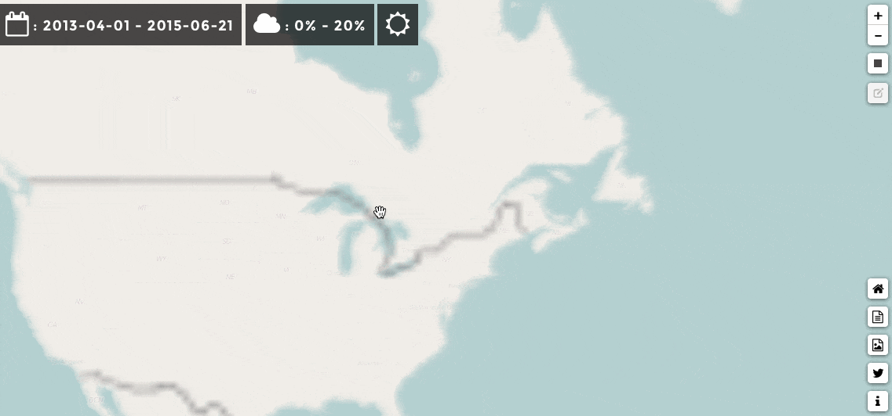

Landsat 8 Mosaic
Fast and Easy mosaic maker
Third month and third project! After A Day Of Landsat 8 and Landsat 8 Evolution I'm glad to introduce another project based on Landsat 8 data.
Landsat 8 Mosaic is a new tool/service that will enable everyone to acces all Landsat 8 open imagery and compute mosaics.
FIRST, this is NOT SCIENCE! every mosaic is a result of jpeg combination from USGS Earth Explorer Landsat preview.
As for both precedent projects? I've tried to do as simple as possible. With pretty much the same interface as Landsat 8 Evolution I hope this will help you to go through the amazing Landsat 8 imagery catalogue.
At the begining, I started the project as a one night project, but I spend more than a week to finish it. Bugs corrections, Leaflet adjustements and API testing... never say it will be easy.
Again as for Landsat Evolution, the webpage comes with a service to create a mosaic jpeg using Remote Pixel API
I had fun to develop this project, but as I said this is not science and working with jpeg preview can result in strange results... next step: working on real landsat dataset!
- Date: June 2015
- Category: Landsat 8 / OpenData